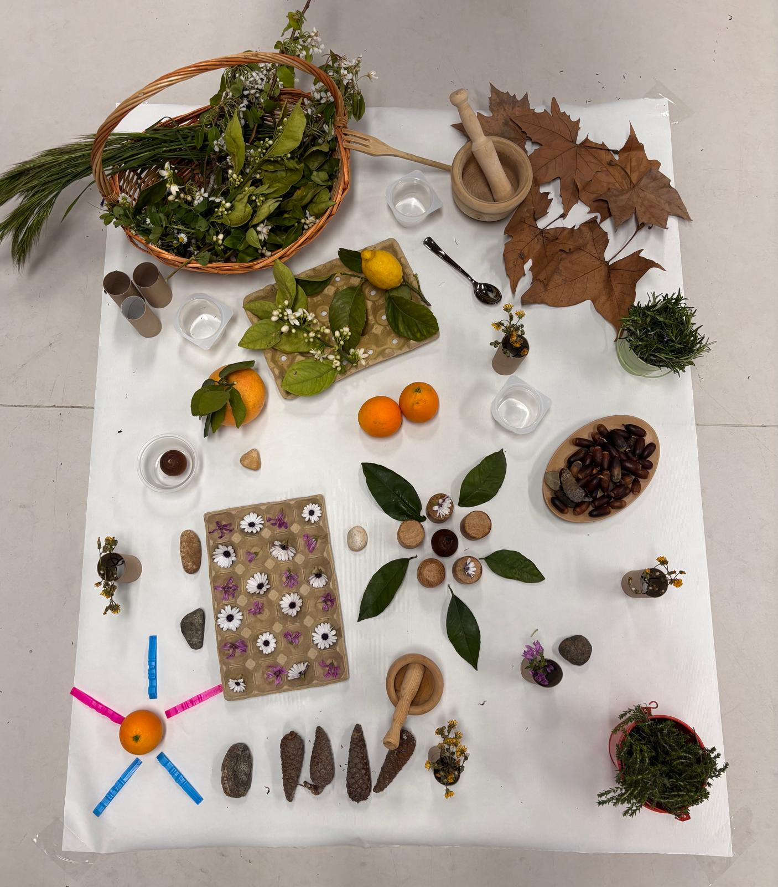

Asignatura: Organización Escolar en la E.I | Docente: Rocío Pascual Lacal
Introducción a nuestro modelo
Para nosotras, organizar un centro de Educación Infantil va mucho más allá de cuadrar horarios o rellenar documentos. Entendemos la organización como una verdadera declaración de intenciones hacia los niños y niñas. Así nace La Escuela del Reencuentro.
A lo largo de este libro digital interactivo, os presentamos el modelo organizativo que hemos diseñado. Es una propuesta propia y flexible en la que hemos tomado como referencia tres grandes pilares de las pedagogías activas:
Reggio Emilia
Apostamos por el cuidado de la estética, la documentación pedagógica y el espacio como el "Tercer Maestro".
Bosquescuela
Concebimos la naturaleza como nuestra aula principal y respetamos los tiempos lentos de la infancia.
Inclusión real
Es el espacio y la organización escolar lo que se adapta al niño, fomentando siempre su autonomía.
Te invitamos a navegar por nuestro modelo, estructurado en los cuatro bloques fundamentales de nuestra propuesta.
Bloque 1
Concepto de Infancia y Modelo de Escuela
La infancia que sostiene nuestra organización
Cualquier escuela se construye sobre la idea previa que tenemos de los niños. En nuestro caso, tenemos claro que no son "adultos en miniatura" ni seres pasivos que solo vienen a escuchar.
Los vemos como constructores de cultura en comunidad. Como bien dice Trueba (2017), la infancia tiene un valor propio en sí misma; no podemos tratarla simplemente como una "sala de espera" preparatoria para el futuro.
El derecho a ser escuchado
Queremos garantizar su derecho a expresarse. Loris Malaguzzi (2001) decía que los niños tienen "cien lenguajes" (el arte, el cuerpo, la naturaleza...) y que la escuela tradicional les suele robar noventa y nueve. Nuestra organización busca, precisamente, devolverles la voz.
Inclusión y adaptación
Siguiendo el Decreto 100/2023 de Andalucía, en nuestro modelo de escuela es la organización y el espacio lo que se adapta al niño/a, y no al revés. Esta es la única forma de garantizar una inclusión real desde la propia estructura escolar.
Bloque 2
Dimensión Material: Espacios y Tiempos
Cómo organizamos el entorno físico de la escuela
El entorno como "Tercer Maestro"
Huyendo de las aulas llenas de pupitres, apostamos por la idea de Reggio Emilia: el entorno es un educador más. Un espacio educa por sí solo cuando se cuida su estética y su orden, generando calma.
Además, basándonos en la Bosquescuela, difuminamos las paredes tradicionales para convertir la propia naturaleza en nuestra gran aula de aprendizaje.
Respetar los tiempos
Los niños de hoy sufren a menudo la prisa constante del mundo adulto. En La Escuela del Reencuentro tomamos la decisión organizativa de habilitar tiempos lentos.
Esto nos permite respetar los ritmos biológicos individuales y ofrecer a los niños el tiempo necesario para sumergirse en su juego y explorar sin interrupciones constantes.
Bloque 2
Nuestra Provocación
El Viaje Sensorial de las Estaciones

El Viaje Sensorial
Para llevar a la práctica nuestro modelo, hemos diseñado una provocación sensorial. Se trata de un escenario preparado con gran intencionalidad pedagógica y cuidado, sin instrucciones de uso, pensado exclusivamente para despertar el asombro y la acción autónoma del alumnado, que se convierte así en constructor de su propio aprendizaje.
Fundamentación teórica
1
Instalaciones de JuegoBasándonos en Abad y Ruiz de Velasco (2011), diseñamos visualmente un espacio con contrastes estacionales que actúa como una auténtica invitación estética al juego.
2
Teoría de las Piezas SueltasSiguiendo a Nicholson (1971), priorizamos el uso de materiales no estructurados, dándoles a los niños la libertad de darles el significado que ellos decidan.
Nuestros recursos
Elementos de otoño
Integramos elementos como hojas secas y cilindros de madera que ofrecen texturas únicas y sonidos naturales al manipularlos.
Cítricos y flores
Usamos naranjas y limones frescos para estimular el olfato y generar contrastes visuales muy atractivos.
Elementos contenedores y estructurantes
Hueveras de cartón, cilindros de cartón y morteros de madera. Son fundamentales porque invitan a los niños a realizar trasvases, practicar el agarre de pinza y empezar a clasificar de forma intuitiva.
Bloque 3
Dimensión Humana y Relacional
La Pareja Educativa
En nuestra escuela apostamos por dejar atrás al maestro aislado. Implementamos la figura de la pareja educativa para fomentar una observación compartida del alumnado y generar un debate pedagógico enriquecedor.
Familias Aliadas
Consideramos a las familias como verdaderas co-constructoras del espacio escolar. Ellas colaboran de forma activa en el proyecto, por ejemplo, encargándose de recoger material natural y desestructurado para nuestras provocaciones.
Cultura del Encuentro
Las relaciones en la escuela se basan en la "Ética del encuentro" (Dahlberg et al., 2005) y en un liderazgo horizontal. Tratamos el conflicto no desde la imposición o el castigo, sino como una oportunidad constante de diálogo y aprendizaje social.
Bloque 4
Evaluación y Mejora Organizativa
Qué evaluamos: La vida que sucede
Los resultados académicos no se evalúan.
Lo que sí evaluamos es si nuestro modelo organizativo funciona, observando detalladamente la interacción con la provocación. Nuestro foco de evaluación se basa en hacernos estas preguntas clave: ¿El espacio permite verdaderamente la autonomía? ¿Los materiales naturales generan curiosidad?
Revisión y Mejora Continua
Participación en asambleas: Las familias y los docentes analizan de manera conjunta la documentación tomada en las provocaciones.
Memoria de Autoevaluación: Todo lo analizado se plasma en este documento, que recoge compromisos firmes de mejora para la organización del curso.
Hacer visible lo invisible
"El desorden final que el adulto percibe en la instalación estacional constituye, para nosotras, la prueba documentada y visible de que el aprendizaje y la experimentación han sucedido."
Reflexión Final y Referencias
Reflexión sobre nuestro proyecto
Llevar a la práctica este modelo organizativo nos ha demostrado la importancia vital que tienen el tiempo y el espacio en la educación. Como futuras docentes, solemos preocuparnos mucho por "qué" vamos a enseñar, olvidando que el "dónde" y el "cómo" educan de forma silenciosa pero muy potente.
Diseñar la instalación del "Viaje Sensorial" nos ha permitido comprobar que cuando le ofreces a la infancia un entorno estético, seguro y respetuoso con sus ritmos, no hace falta dirigirles ni decirles constantemente lo que tienen que hacer; el aprendizaje, la concentración y el asombro surgen de forma natural y genuina.
Referencias Bibliográficas
Abad Molina, J., y Ruiz de Velasco Gálvez, Á. (2011). El juego simbólico. Octaedro.
Decreto 100/2023, de 30 de mayo, por el que se establece la ordenación y las enseñanzas mínimas de la etapa de Educación Infantil en la Comunidad Autónoma de Andalucía. (2023). BOJA, 104.
Hoyuelos, A. (2005). La ética en el pensamiento y obra pedagógica de Loris Malaguzzi. Octaedro.
Malaguzzi, L. (2001). La educación infantil en Reggio Emilia. Octaedro.
Nicholson, S. (1971). How not to cheat children: The theory of loose parts. Landscape Architecture, 62(1), 30-34.
Pascual Lacal, R. (2024). La cultura de la infancia como pilar de la organización escolar [Manual de la asignatura]. Universidad de Málaga.
Rinaldi, C. (2006). En diálogo con Reggio Emilia: Escuchar, investigar y aprender. Octaedro.